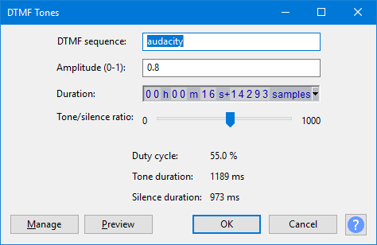

DTMF Tones
- Accessed by:
- 
- The image above illustrates replacing a selection region with generated audio.
{kind=link}
DTMF sequence
For each tone you wish to generate, enter numbers from 0 to 9, lower case letters from a to z, and the * and # characters. You can also enter the four "priority" tones used by the US Military (upper case A, B, C and D).
Amplitude
Lets you type an amplitude value for the loudness of the generated audio. Permitted values are between 0 (silence) and 1 (the maximum possible volume without clipping), with a default of 0.8.
Duration
Type (or use the keyboard arrows) to enter the required Duration. If the first digit you want is highlighted, just type the whole number. If the required first digit is not highlighted, use Left or Right arrow on your keyboard to move to the first digit, then type. You can also increment a highlighted digit with keyboard Up or Down arrow instead of typing.
- When generating at the cursor, Duration initializes to 30.000 seconds (except for the DTMF generator which defaults to 1.000 second). However, your last entered Duration is always remembered.
- When replacing a selection region, Duration always displays the exact duration of that selection to the nearest audio sample.
Tone/silence ratio
Use the slider to select the ratio between the length of each tone in the series and the length of the silences between them. This ratio is displayed underneath the slider as the "duty cycle" along with the resulting duration of each tone and silence. Changing the DTMF Duration changes the duration of each tone and silence while retaining the ratio between them.
For example, if you generate four tones in a sequence lasting four seconds, choosing a duty cycle of 50% in order to make the tones and silences of equal duration, the four tones and the three silences between them will all be 571 milliseconds long.
The command buttons
Clicking on the command buttons give the following results:
- gives a dropdown menu enabling you to manage presets for the tool and to see some detail about the tool. For details see Manage presets.
- plays a short preview of what the audio would sound like if the effect is applied with the current settings, without making actual changes to the audio. The length of preview is determined by your setting in , the default setting is 6 seconds.
- applies the effect to the selected audio with the current effect settings.
- aborts the effect and leaves the audio unchanged.
 brings you to the appropriate page in the Manual, this page.
brings you to the appropriate page in the Manual, this page.